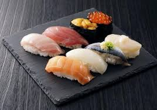
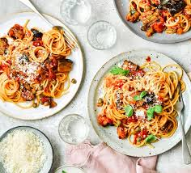

Cuisine is a type of food that is cooked in a specific way based on a culture's ingredients, region, and traditions.Here are the top 5 most popular cuisines around the world
Italian cuisine is a Mediterranean cuisine consisting of the ingredients, recipes, and cooking techniques developed in Italy since Roman times and later spread around the world together with waves of Italian diaspora.Significant changes occurred with the colonization of the Americas and the introduction of potatoes, tomatoes, capsicums, maize, and sugar beet—the latter introduced in quantity in the 18th century.It is one of the best-known and most appreciated gastronomies worldwide.
Japanese cuisine encompasses the regional and traditional foods of Japan, which have developed through centuries of political, economic, and social changes. The traditional cuisine of Japan (Japanese: washoku) is based on rice with miso soup and other dishes with an emphasis on seasonal ingredients. Side dishes often consist of fish, pickled vegetables, and vegetables cooked in broth. Common seafood is often grilled, but it is also sometimes served raw as sashimi or as sushi. Seafood and vegetables are also deep-fried in a light batter, as tempura. Apart from rice, a staple includes noodles, such as soba and udon. Japan also has many simmered dishes, such as fish products in broth called oden, or beef in sukiyaki and nikujaga.
Chinese cuisine comprises cuisines originating from China, as well as from Chinese people from other parts of the world.Because of the Chinese diaspora and the historical power of the country, Chinese cuisine has profoundly influenced many other cuisines in Asia and beyond, with modifications made to cater to local palates.
Indian cuisine consists of a variety of regional and traditional cuisines native to the Indian subcontinent. Given the diversity in soil, climate, culture, ethnic groups, and occupations, these cuisines vary substantially and use locally available spices, herbs, vegetables, and fruits.
Indian food is also heavily influenced by religion, in particular Hinduism and Islam, cultural choices and traditions. Historical events such as invasions, trade relations, and colonialism have played a role in introducing certain foods to this country. The Columbian discovery of the New World brought a number of new vegetables and fruits to India. A number of these such as potatoes, tomatoes, chillies, peanuts, and guava have become staples in many regions of India.
American cuisine consists of the cooking style and traditional dishes prepared in the United States. It has been significantly influenced by Europeans, Indigenous Americans, Africans, Latin Americans, Asians, Pacific Islanders, and many other cultures and traditions.
Highlights of American cuisine include milkshakes, barbecue, and a wide range of fried foods. Many quintessential American dishes are unique takes on food originally from other culinary traditions, including pizza, hot dogs, and Tex-Mex. Regional highlights include a range of fish dishes in the coastal states, gumbo, and cheesesteak. American cuisine has specific foods that are eaten on holidays, such as a turkey at Thanksgiving dinner or Christmas dinner.